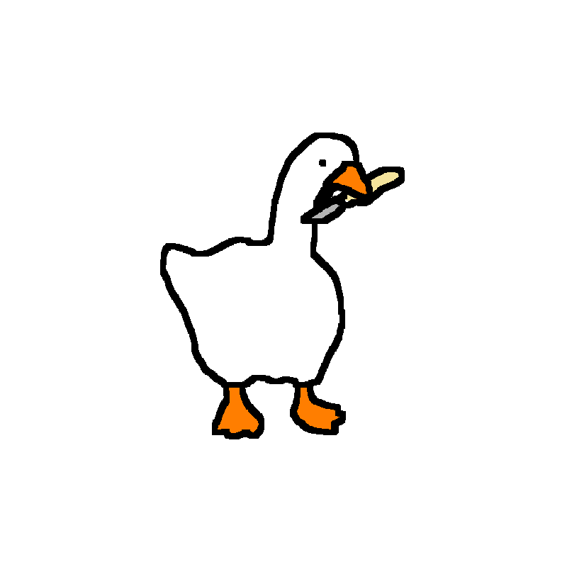

A website that doesn't want to be finished
Somewhere in here
is a goose.
Click it, and you win. That's the whole rulebook. What it doesn't tell you is how many pages you'll wander through first, or how many buttons are lying to you along the way. Every subpage looks and behaves a little differently — some are honest, most are not.

go on, try to click it